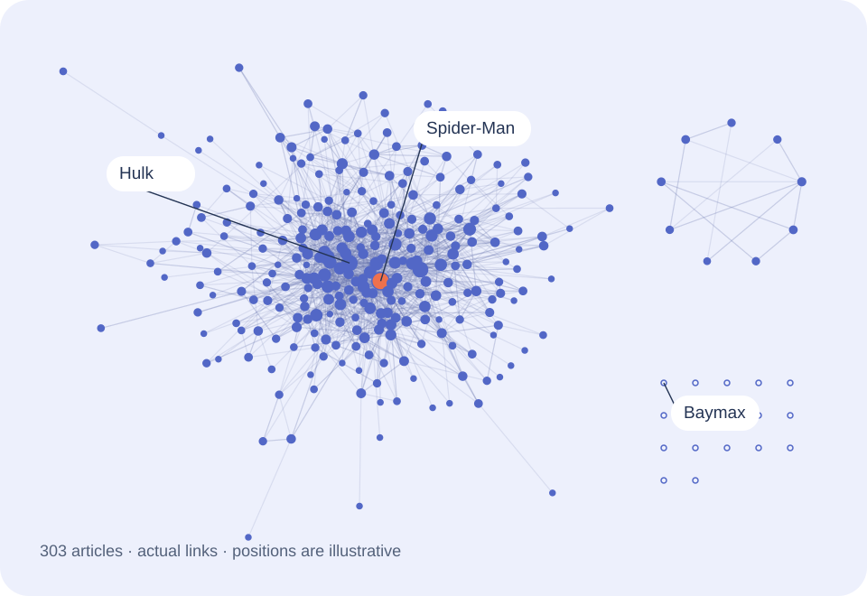
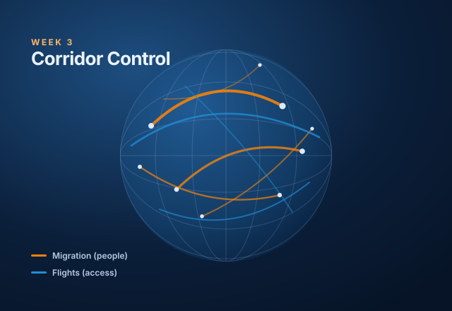

Loading the frozen snapshot…
Log–Log Legends / DTU 02805
Marvel,
connected.
Open a pack. Close a station. See what the links between 303 Wikipedia articles reveal.
Interactive stories. No network-science background needed.

Weekly posts
-
 Week 1 · 2 September
Week 1 · 2 SeptemberNetworks
Hero Packs
Why do you keep drawing the same heroes?
Open the story -
 Week 2 · 9 September
Week 2 · 9 SeptemberModels & null models
Transit Authority
Which connections can the network live without?
Open the story -

Week 3 · 16 September · latestWho matters, and why
Corridor Control
Two networks, one world. Which country is the bridge?
Open the story
Upcoming weeks
-
Week 4 · 23 Sep · coming
Communities & backbones
Opens after the course session.
-
Week 5 · 30 Sep · coming
The language half · NLP I
Opens after the course session.
-
Week 6 · 7 Oct · coming
NLP II
Opens after the course session.
-
Week 7 · 21 Oct · coming
NLP III
Opens after the course session.
-
Week 8 · 28 Oct · coming
Networks × language
Opens after the course session.
Behind every post.
One frozen snapshot of 303 Wikipedia articles.THE TAKEAWAY
The network in numbers
The frozen graph contains 303 articles in 19 weakly connected components: a 277-article core, a nine-article island, and 17 isolates. Follow the cabinets to discover how direction, choice of metric and comparison model change the answer.
See the arcade
Made by Log–Log Legends
Social Graphs and Interactions · DTU · Fall 2026
- Àngela Buxó
- Gyula Kürthy
- Niklas Johansen
Sources & methods
Snapshot & limitations
What the data means
303 article entries and 1,784 directed links from the course’s frozen 26 August 2026 snapshot. A link means one article links to another within this roster. It does not measure friendship, hero strength, popularity or the whole Marvel universe.
Download the snapshot and metrics (JSON)Limits of the experiment
The arcade is an educational interpretation of a bounded article network. Free-play experiments are exploratory tools, not posts or hand-ins.
Methods and reproducibility
Native browser modules compute paths, removals, connected rewiring, random walks and text search. NetworkX 3.6.1 supplies independent metrics and checks. Five-card pack probabilities are a deliberately designed game rule. Prediction scores are 100 × (1 − absolute error / displayed guess range), clamped to 0–100.
Analysis and source code on GitHub. All experiments run locally in your browser; the frozen data is never edited.
AI use and authorship
Built with AI assistance for interface design, programming, explanation drafts and test construction. Metrics come from the provided snapshot and reproducible analysis; the games and metaphors are authored presentation choices. Numerical checks compare independent Python and browser implementations.